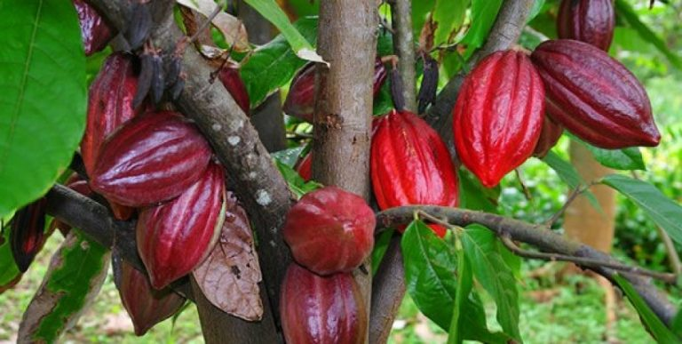
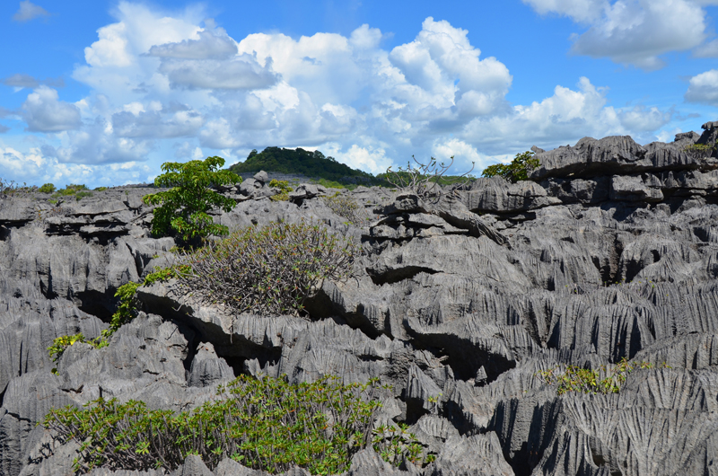
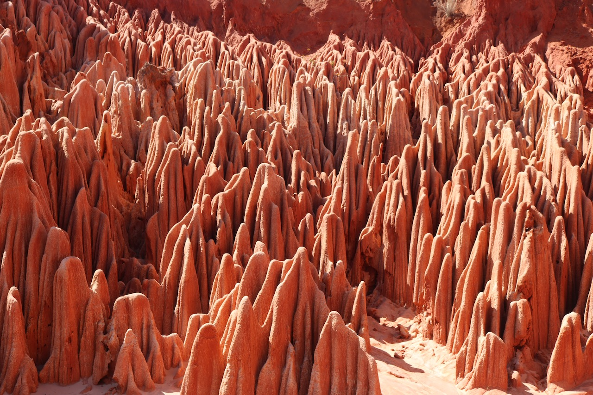
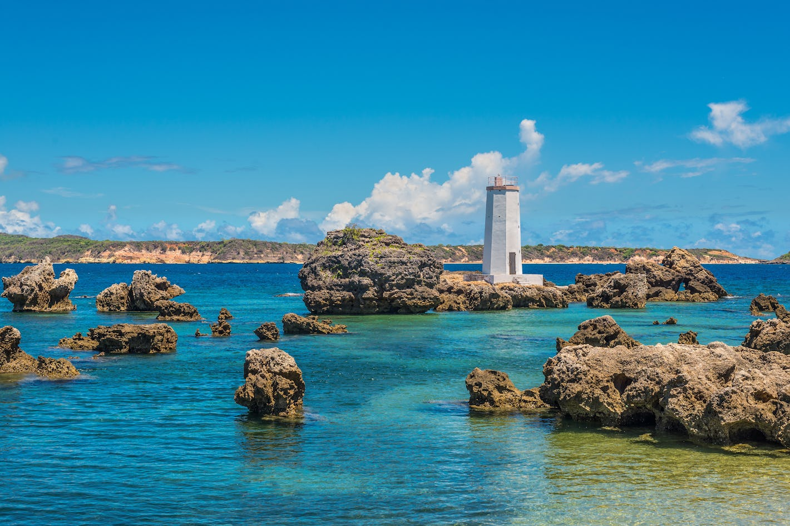

Les plantations d'Ambanja vous invitent à une exploration des méthodes agricoles traditionnelles malgaches, dans un voyage olfactif à travers les vastes étendues de cacao, café, poivre, vanille, ylang-ylang, et vétiver. La visite de ces plantations est une immersion dans l'économie et la culture locales, mettant en lumière les techniques de culture et de récolte qui ont façonné la région.
Circuit Nord
Decouvrez toute la beauté du nord
de Madagascar à Diego-Suarez !
À chaque jour son lot de nouvelles aventures, que vous rêviez de percer les secrets de la vanille, de vous détendre sur les plages de sable fin ou d'admirer le coucher de soleil sur l'océan… Après un dernier réveil dans votre chambre avec vue sur mer, l'hôtel organise votre acheminement jusqu'au port, où votre bateau vous attend pour une nouvelle aventure. Après le petit-déjeuner, vous prenez la route pour le port de Nosy Be. De là, vous embarquez à bord d'une vedette rapide pour une traversée de 45 minutes en direction d'Ankify, admirant au passage les îles paradisiaques de Komba et Tanikely.
Programme :

01
Plantation de cacao

02
Parc Ankarana
Les Tsingy d'Ankarana, une forêt de pierre formée à partir d'une ancienne barrière de corail, vous attendent avec leur biodiversité unique, abritant des espèces endémiques et offrant un aperçu de la spiritualité locale. Le sentier de marche vous mène à travers ce paysage lunaire, jusqu'à des grottes habitées par des milliers de chauves-souris.

03
Tsingy rouge
Puis, il y a les Tsingy Rouges, une formation géologique étonnante qui offre un contraste spectaculaire avec le vert luxuriant de Madagascar. Ces formations sont accessibles et présentent un phénomène géologique unique, enrichissant votre compréhension des merveilles naturelles de l'île.

04
Trois Baies
Votre aventure se poursuit vers les Trois Baies : les baies des Dunes, des Pigeons, et de Sakalava. Ces plages offrent des panoramas à couper le souffle sur l'Océan Indien, des eaux cristallines, propices à la détente et à la baignade, dans un cadre naturel préservé.

Cap Miné
Non loin, Cap Miné se dévoile comme un lieu chargé d'histoire, avec ses paysages sauvages et ses plages d'Orangéa et de Ramena. C'est un point de vue exceptionnel sur la passe qui sépare la baie de Diego de l'océan Indien, un endroit idéal pour méditer sur la puissance de la nature et la richesse historique de la région.

Montagne d'Ambre
Enfin, le Parc National de la Montagne d'Ambre vous plonge au cœur d'une forêt tropicale luxuriante, avec ses cascades sauvages, lacs de cratère, et une biodiversité remarquable. C'est une invitation à découvrir la faune et la flore uniques de Madagascar, dans un écrin de verdure offrant des vues panoramiques époustouflantes.
Tout au long de votre parcours, les rencontres et les sourires se sont multipliés, enrichissant votre voyage de souvenirs inoubliables. Les haltes pour flâner sur un marché local, les échanges avec les hôteliers et les producteurs locaux ajoutent une dimension humaine à la beauté des paysages malgaches.
Inclut
Transfert - Eau minérale - Entrée Parcs - Déjeuner - Guide
réserver
Prix
Prix 125 €/Personne/Jour
(minimum 3 personnes)